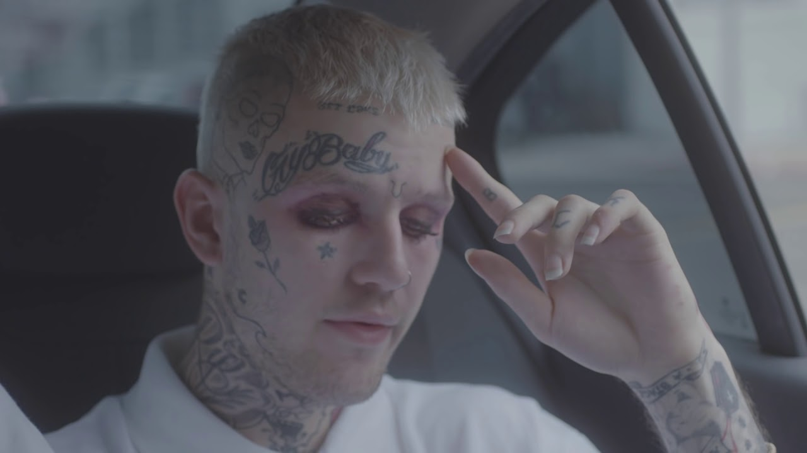
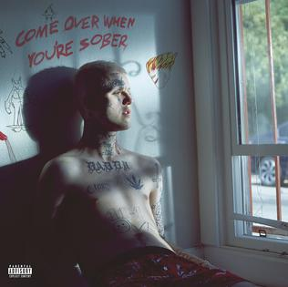

Born on November 1, 1996 in Allentown Pennyslyvania to parents who both graduated from Harvard, Gustav grew up on Long Island New York. At an early age his parents divorced and his father was absent for most of his life. He describes his upbring being "apathetic and drug-fuelled". He dropped out of High School to do online school. When he got his diploma he began posting his music to Youtube and Soundcloud.
Lil Peeps started creating music in his teens. He was inspired by underground artists suck as Seshhollowaterboyz and iLoveMakonnen. When he dropped out of High School he moved To Los Angeles to meet with some of his freinds which would later form into the group JGRXXN. In 2015 Lil Peep released his first mix tape Lil Peep part 1 and would later leave the group. In 2017 Lil Peep released his first album Come over when your sober Part 1 and would die four months later from a accidental overdose of Xanax . His second album would release after his death called Come over when You're sober part 2 about a year later.
